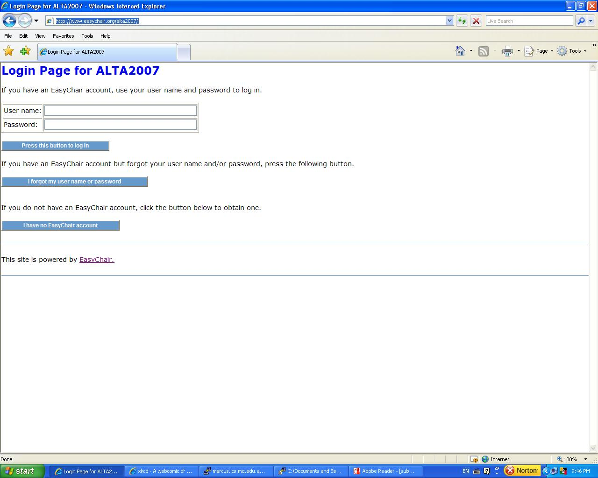
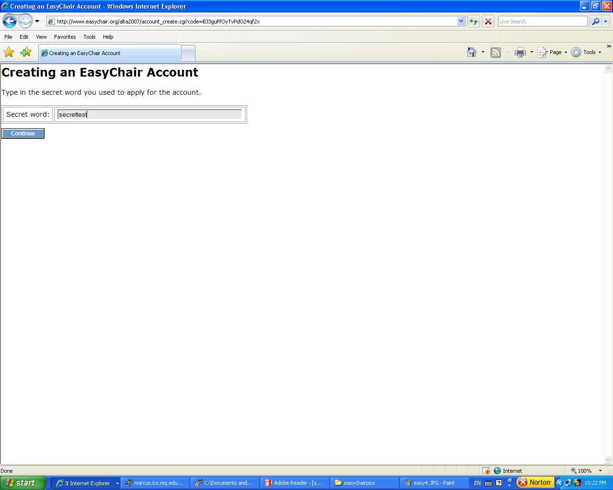
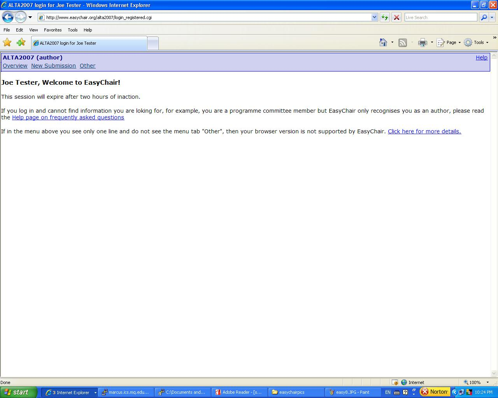
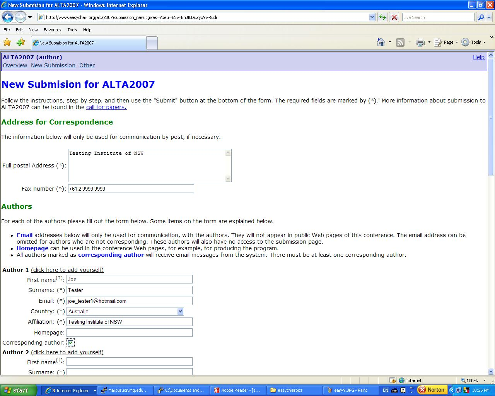

| Home |
| Call for Papers |
| Accepted Papers |
| Program |
| Online Proceedings |
| Tutorials |
| Committees |
| Instructions for Authors |
| Submissions and Reviews |
| Timetables and Deadlines |
| Local Information |
| Registration |
Submissions and Reviewing Process
ALTA2007 is using the EasyChair system for paper submissions. Submitting is a two-step process:
- If you don't already have a user account at EasyChair, sign up for one; and then
- Sign in and upload your paper.
The ALTA2007 online submission page is here. If you'd like more detailed instructions, see below.
Submission How-To
-
Sign up for an EasyChair account.
-
Go to the login
page and select I have no EasyChair account.

-
Fill in the details to create the account. Make sure you remember
your "secret word".

-
You'll get a page telling you that you've been sent email.

-
Your email will give a link to follow as the next step.

-
At this link, fill in your "secret word".

-
Then you fill in the usual account details, including a username and
password of your choice.

-
You get an Account Created confirmation page.

-
Go to the login
page and select I have no EasyChair account.
-
Sign in and submit paper.
-
Log in with your chosen username and password.

-
You'll be logged in as an author by default. Select New
Submission in the menu bar.

-
Fill in all the typical author details.


-
Finally you'll get a Submission Received confirmation page.

-
Log in with your chosen username and password.
- If you want to revise a submission, just log in and select from the menu bar the relevant paper ID (the Paper 3 link in the menu bar of the last example image above).
For any comments or questions about these pages please contact the ALTA Workshop 2007 organisers (workshop AT alta DOT asn DOT au).